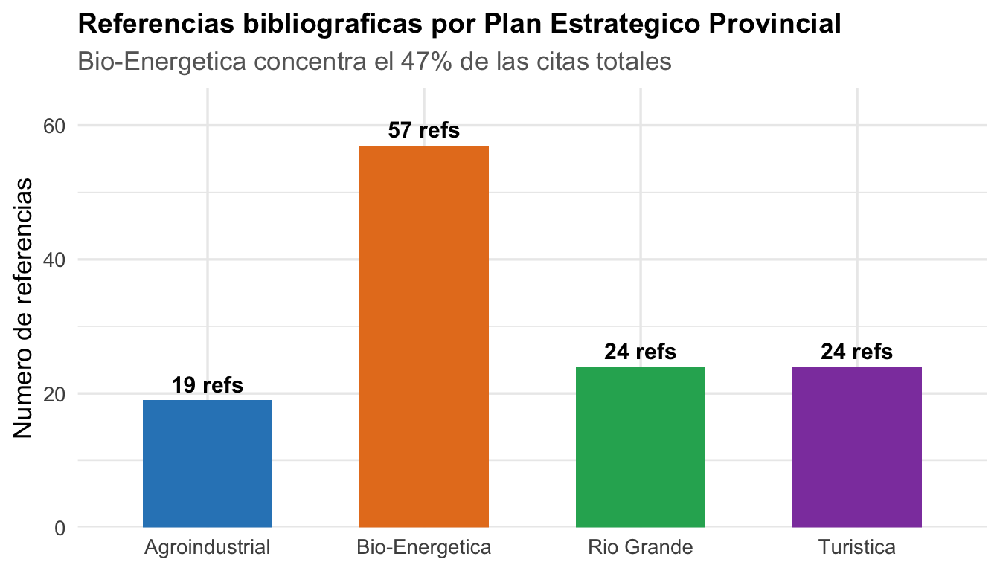
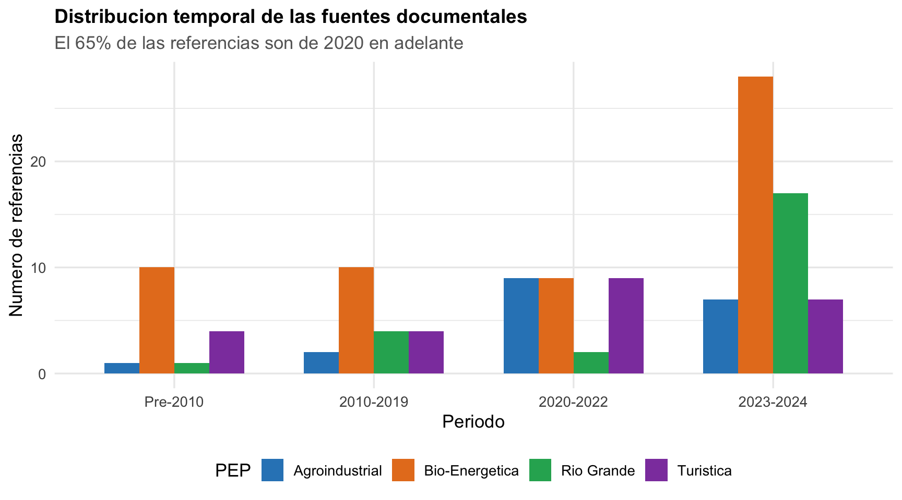
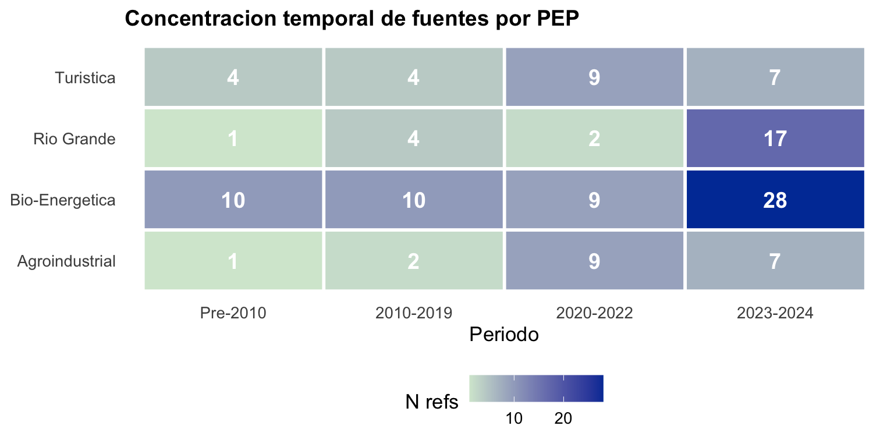
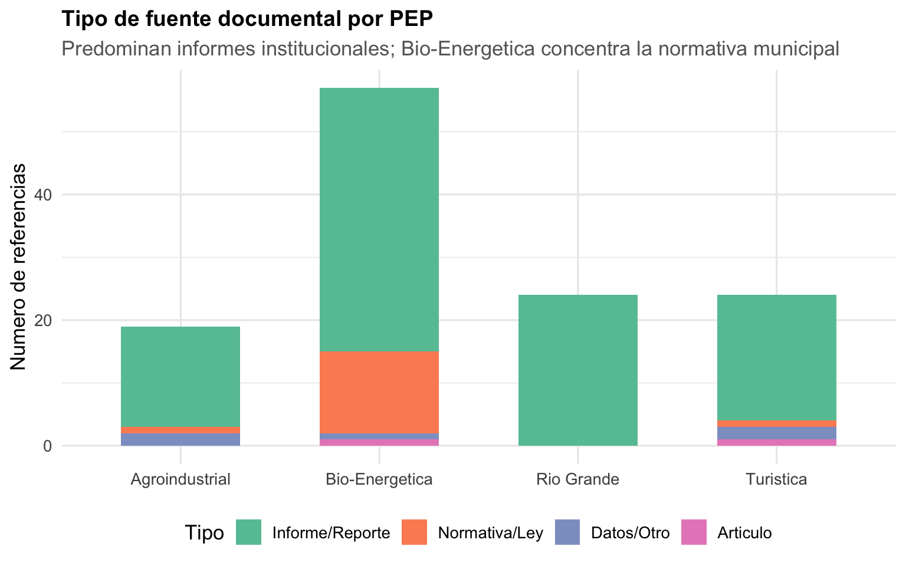
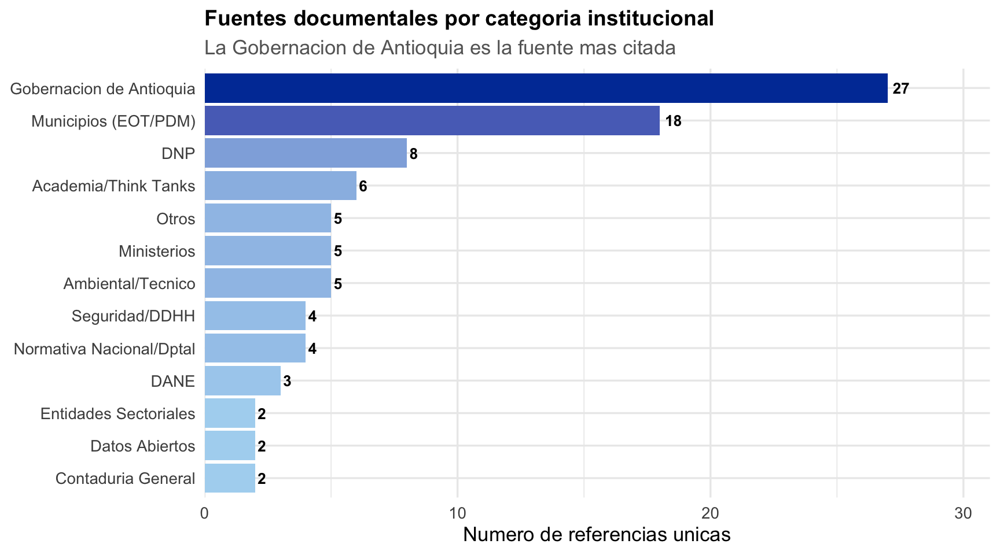
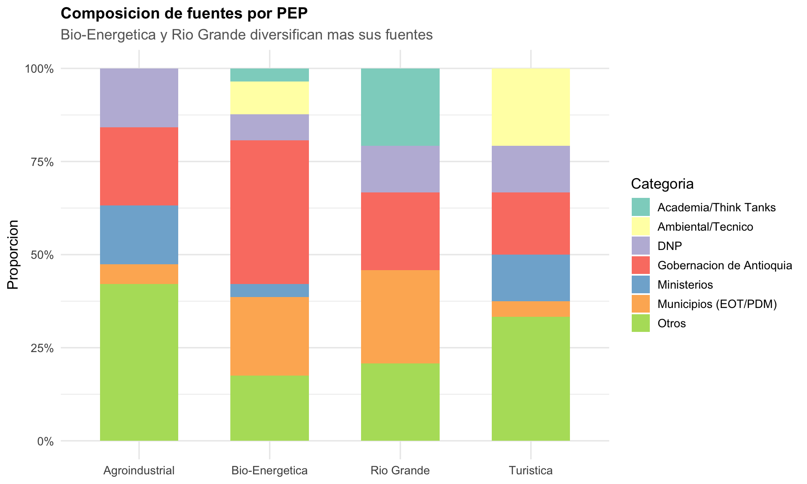
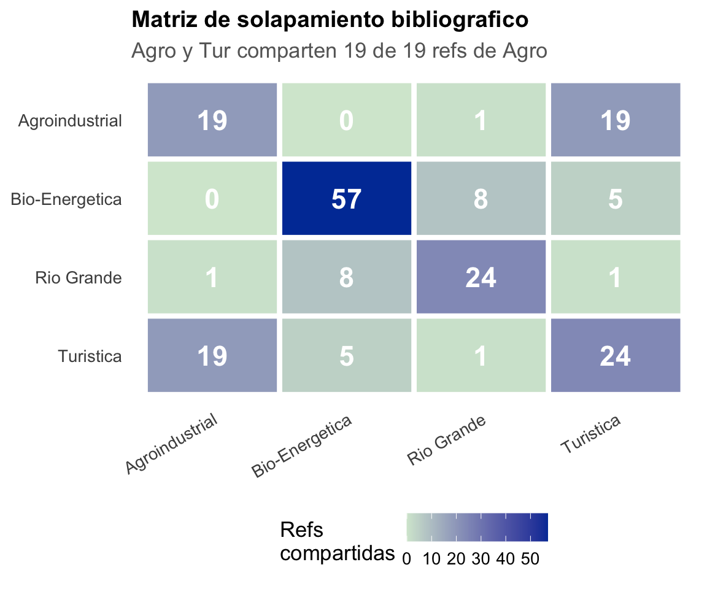
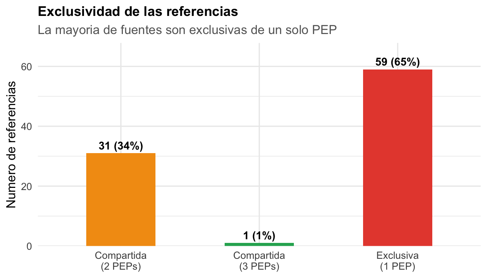
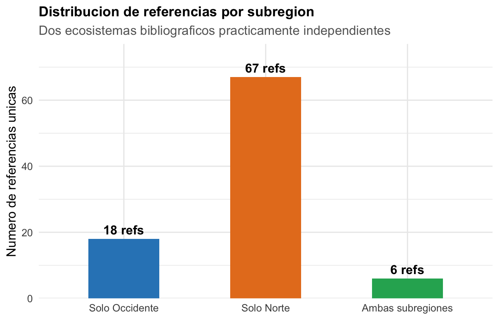

Bibliometria de los PEPs
Analisis de las fuentes documentales de los 4 Planes Estrategicos Provinciales
Corpus de Referencia
Los 4 Planes Estrategicos Provinciales (PEPs) citan un total de 124 referencias (con duplicados entre PEPs) que se reducen a ~93 referencias unicas tras deduplicacion. Estas fuentes documentales sustentan los diagnosticos territoriales y las formulaciones estrategicas de cada provincia.
Este analisis bibliometrico examina: (1) la composicion del corpus por PEP, (2) la distribucion temporal y tipologica de las fuentes, (3) el solapamiento entre las bibliografias, y (4) los patrones por subregion.
Composicion del Corpus
Volumen de referencias por PEP
Bio-Energetica (58 refs) triplica el promedio de los demas PEPs (~22 refs). Esto refleja: (1) la inclusion de 11 acuerdos municipales de ordenamiento territorial, (2) multiples fuentes sectoriales de salud, educacion y seguridad de la Gobernacion, y (3) un mayor rigor documental en general.
Distribucion temporal


Tipo de fuente

| Tipo de fuente | N | % |
|---|---|---|
| Informe/Reporte | 73 | 80% |
| Normativa/Ley | 14 | 15% |
| Datos/Otro | 3 | 3% |
| Articulo | 1 | 1% |
Categorias Tematicas de las Fuentes


Analisis Cruzado: Solapamiento entre PEPs

| Par | Compartidas | Subregiones |
|---|---|---|
| Agro - Tur | 19 | Occidente - Occidente |
| Bio - Rio | 8 | Norte - Norte |
| Bio - Tur | 5 | Norte - Occidente |
| Agro - Rio | 1 | Occidente - Norte |
| Rio - Tur | 1 | Norte - Occidente |
| Agro - Bio | 0 | Occidente - Norte |
Exclusividad de referencias

Patrones por Subregion

Analisis Individual por PEP
| Anio | Autor | Titulo | Tipo |
|---|---|---|---|
| 2000 | Congreso de la Republica de Colombia} | Ley 617 de 2000. Por la cual se dictan normas tendientes a fortalecer la descentralizacion y la racionalizacion del gasto publico de las entidades territoriales | Normativa/Ley |
| 2018 | Instituto Colombiano de Bienestar Familiar} | Entidades contratadas para operar programas de primera infancia en regional Antioquia | Informe/Reporte |
| 2019 | Federacion Colombiana de Municipios} | Analisis de la sostenibilidad fiscal de los municipios de Colombia | Informe/Reporte |
| 2020 | Departamento Administrativo Nacional de Estadistica} | Censo poblacional y financiero de municipios de Colombia 2020 | Informe/Reporte |
| 2020 | Ministerio de Hacienda y Credito Publico} | Guia de evaluacion fiscal para las entidades territoriales | Informe/Reporte |
| 2021 | Gobernacion de Antioquia} | Anuario estadistico de Antioquia: Justicia 2021 | Informe/Reporte |
| 2021 | Gobernacion de Antioquia} | Anuario estadistico de Antioquia: Vias y Transporte 2021 | Informe/Reporte |
| 2021 | Ministerio de Hacienda y Credito Publico} | Guia metodologica para el cumplimiento de los indicadores fiscales de la Ley 617 de 2000 | Informe/Reporte |
| 2021 | Instituto Geografico Agustin Codazzi} | Informe de actualizacion catastral y recaudo tributario predial en las entidades territoriales | Informe/Reporte |
| 2021 | Plataforma Nacional de Datos Abiertos Colombia} | Prestadores servicios publicos Antioquia | Datos/Otro |
| 2022 | Departamento Nacional de Planeacion} | Bases del Plan Nacional de Desarrollo 2024--2026 | Informe/Reporte |
| 2022 | Unidad de Planeacion Minero-Energetica} | Boletin de Calculo ICEE 2019--2022 | Informe/Reporte |
| 2023 | Departamento Nacional de Planeacion} | Sistema General de Participaciones: Informe Anual de Distribucion de Recursos a Entidades Territoriales | Informe/Reporte |
| 2023 | Gobernacion de Antioquia} | Informe de viabilidad fiscal y financiera de municipios y distritos de Antioquia 2023 | Informe/Reporte |
| 2023 | Comision de Regulacion de Agua Potable y Saneamiento Basico} | Informe de rendicion de cuentas 2023 | Informe/Reporte |
| 2024 | Gobernacion de Antioquia} | Planes de ordenamiento territorial | Informe/Reporte |
| 2024 | Ministerio de Salud y Proteccion Social} | Oferta Institucional para personas mayores | Informe/Reporte |
| 2024 | Superintendencia de Servicios Publicos Domiciliarios} | Estado y empresas deben reducir las brechas en el acceso al agua potable y saneamiento basico | Informe/Reporte |
| 2024 | Plataforma Nacional de Datos Abiertos Colombia} | E.S.E Hospitales de Antioquia | Datos/Otro |
19 referencias — bibliografia mas compacta. Perfil dominado por fuentes fiscales y de servicios publicos. Comparte el 100% de sus referencias con Turistica (misma subregion, mismo equipo consultor probable).
| Anio | Autor | Titulo | Tipo |
|---|---|---|---|
| 1972 | Feininger, T. and Barrero, D. and Castro, N. | Geologia de parte de los departamentos de Antioquia y Caldas (Subzona II-B) | Articulo |
| 2000 | FAO} | Evaluacion de los recursos forestales mundiales 2000. Evaluacion de los productos forestales no madereros en America Central | Informe/Reporte |
| 2000 | Municipio de Campamento} | Acuerdo 007 de 2000 | Normativa/Ley |
| 2000 | Municipio de Campamento} | Diagnostico del EOT | Datos/Otro |
| 2000 | Municipio de Ituango} | Acuerdo 018 de 2000 | Normativa/Ley |
| 2001 | Municipio San Andres de Cuerquia} | Acuerdo 013 de 2001 | Normativa/Ley |
| 2005 | Departamento Administrativo Nacional de Estadistica} | Censo General 2005 | Informe/Reporte |
| 2005 | Municipio de Valdivia} | Acuerdo 002 de 2005 | Normativa/Ley |
| 2007 | Departamento Nacional de Planeacion} | Propuesta Metodologica para la elaboracion de Planes Estrategicos Territoriales | Informe/Reporte |
| 2008 | IGAC} | Mapa de Cobertura de la Tierra Cuenca Magdalena-Cauca: Metodologia CORINE Land Cover adaptada para Colombia a escala 1:100.000 | Informe/Reporte |
| 2010 | IDEAM} | Leyenda Nacional de Coberturas de la Tierra -- Metodologia CORINE Land Cover Adaptada para Colombia Escala 1:100.000 | Informe/Reporte |
| 2011 | Yepes, A. and Navarrete, D. and Duque, A. and Phillips, J. and Cabrera, K. and Alvarez, E. and Ordonez, M. | Protocolo para la estimacion nacional y subnacional de biomasa -- carbono en Colombia | Informe/Reporte |
| 2015 | Gobernacion de Antioquia} | Inventario de la red vial del departamento de Antioquia a diciembre de 2015 | Informe/Reporte |
| 2016 | Gobernacion de Antioquia} | Organismos Comunales en Antioquia | Informe/Reporte |
| 2016 | Gobernacion de Antioquia} | Poblacion expulsada por desplazamiento forzado entre 1990--2016 | Informe/Reporte |
| 2018 | Departamento Administrativo Nacional de Estadistica} | Censo Nacional de Poblacion y Vivienda 2018 | Informe/Reporte |
| 2018 | Departamento Nacional de Planeacion} | Guia para la construccion y analisis de indicadores y Guia para el seguimiento de Politicas Publicas | Informe/Reporte |
| 2019 | Gobernacion de Antioquia} | Plan de Ordenamiento Departamental -- POD | Informe/Reporte |
| 2019 | Gobernacion de Antioquia} | POD de Antioquia 2019: Macroprocesos | Informe/Reporte |
| 2019 | Municipio de Guadalupe} | Acuerdo 007 de 2019 | Normativa/Ley |
| 2020 | Gobernacion de Antioquia} | Plan Departamental de Patrimonio Cultural ``Antioquia es patrimonio'' 2020--2029 | Informe/Reporte |
| 2021 | Funcion Publica} | Decreto 1033 de 2021 | Normativa/Ley |
| 2021 | Gobernacion de Antioquia} | Anuario Estadistico 2021: Estructura Poblacional | Informe/Reporte |
| 2021 | Ministerio del Interior} | Resguardos Indigenas a nivel nacional | Informe/Reporte |
| 2021 | Proantioquia} | Curso Ejecutivo CAP MAPP | Informe/Reporte |
| 2021 | Alcaldia de Medellin} | Plan de Accion | Informe/Reporte |
| 2021 | Gobernacion de Antioquia} | Perfil de Desarrollo Subregional Norte | Informe/Reporte |
| 2022 | Gobernacion de Antioquia} | Anuario Estadistico de Antioquia 2022: Vias y Transporte | Informe/Reporte |
| 2022 | Municipio de Carolina del Principe} | Acuerdo 002 de 2022 | Normativa/Ley |
| 2023 | Contaduria General de la Nacion} | CT01 - Categorizacion de municipios 2023 | Informe/Reporte |
| 2023 | Gobernacion de Antioquia} | Agenda 2040 de Antioquia | Informe/Reporte |
| 2023 | Gobernacion de Antioquia} | Macroprocesos Territoriales. Agenda 2040 | Informe/Reporte |
| 2023 | Gobernacion de Antioquia} | Encuesta de Calidad de Vida 2023 | Informe/Reporte |
| 2023 | Gobernacion de Antioquia} | Situacion de Derechos Humanos en Antioquia | Informe/Reporte |
| 2023 | Gobernacion de Antioquia} | Plan Maestro de Transporte y Logistica de Antioquia | Informe/Reporte |
| 2023 | Fundacion Proantioquia} | Estado de la Educacion en Antioquia 2018--2021: Un analisis cuantitativo para los 125 municipios del departamento | Informe/Reporte |
| 2023 | EPM} | Antioquia Sostenible Por un Territorio Socialmente Responsable Subregion Norte | Informe/Reporte |
| 2023 | Consejo Territorial de Planeacion de Antioquia} | Perfil de Desarrollo Subregional Subregion Norte de Antioquia | Informe/Reporte |
| 2023 | Municipio de Angostura} | Acuerdo 002 de 2023 | Normativa/Ley |
| 2023 | Municipio de Briceno} | Acuerdo 019 de 2023 | Normativa/Ley |
| 2023 | Municipio de Toledo} | Acuerdo 011 de 2023 | Normativa/Ley |
| 2023 | Municipio de Yarumal} | Acuerdo 002 de 2023 | Normativa/Ley |
| 2024 | Asamblea Departamental de Antioquia} | Ordenanza 027 de 2024 | Normativa/Ley |
| 2024 | Asamblea de Antioquia} | Ordenanza 048 de 2024 | Normativa/Ley |
| 2024 | Departamento Nacional de Planeacion} | Fichas Territoriales | Informe/Reporte |
| 2024 | Contaduria General de la Nacion} | CT01 - Categorizacion de Municipios 2024 | Informe/Reporte |
| 2024 | Gobernacion de Antioquia} | Plan de Desarrollo Departamental ``Por Antioquia Firme 2024--2027'' | Informe/Reporte |
| 2024 | Gobernacion de Antioquia} | Plan de Extension Agropecuaria de Antioquia 2024--2027 | Informe/Reporte |
| 2024 | Gobernacion de Antioquia} | Demografia y Territorio | Informe/Reporte |
| 2024 | Gobernacion de Antioquia} | Estadisticas Vitales | Informe/Reporte |
| 2024 | Gobernacion de Antioquia} | Gestion en Salud | Informe/Reporte |
| 2024 | Gobernacion de Antioquia} | Prestadores de salud del Departamento | Informe/Reporte |
| 2024 | Gobernacion de Antioquia} | Region Administrativa y de Planificacion de La Paz, La Vida y La Noviolencia | Informe/Reporte |
| 2024 | Gobernacion de Antioquia} | Documento Tecnico de Soporte Provincia Administrativa y de Planificacion Bio-energetica del Norte de Antioquia | Informe/Reporte |
| 2024 | Ministerio de Educacion Nacional} | Estadisticas Sectoriales de Educacion Preescolar, Basica y Media | Informe/Reporte |
| 2024 | Unidad Nacional de Restitucion de Tierras} | Estadisticas de solicitud de restitucion de tierras | Informe/Reporte |
| 2024 | Policia Nacional de Colombia} | Estadistica Delictiva | Informe/Reporte |
58 referencias — la mas exhaustiva. Incluye 11 acuerdos municipales (EOT/PBOT), 7+ fuentes de la DSSA, perfiles subregionales, normativa departamental y fuentes ambientales/tecnicas. Es el unico PEP que cita fuentes de seguridad y derechos humanos detalladas.
| Anio | Autor | Titulo | Tipo |
|---|---|---|---|
| 2007 | Departamento Nacional de Planeacion} | Propuesta Metodologica para la elaboracion de Planes Estrategicos Territoriales | Informe/Reporte |
| 2014 | Programa de las Naciones Unidas para el Desarrollo} | Sinopsis: Seguridad Ciudadana | Informe/Reporte |
| 2018 | Departamento Nacional de Planeacion} | Guia para la construccion y analisis de indicadores y Guia para el seguimiento de Politicas Publicas | Informe/Reporte |
| 2019 | Gobernacion de Antioquia} | Plan de Ordenamiento Departamental -- POD | Informe/Reporte |
| 2019 | Rodriguez, L. D. | La Provincia Administrativa y de Planificacion como modelo de gestion publica para el desarrollo territorial: lecciones aprendidas a partir de la sistematizacion del caso Cartama | Informe/Reporte |
| 2021 | Proantioquia} | Curso Ejecutivo CAP MAPP | Informe/Reporte |
| 2021 | Alcaldia de Medellin} | Plan de Accion | Informe/Reporte |
| 2023 | Departamento Nacional de Planeacion} | IDF 2023 Resultados Nueva metodologia | Informe/Reporte |
| 2023 | Gobernacion de Antioquia} | Agenda 2040 de Antioquia | Informe/Reporte |
| 2023 | Gobernacion de Antioquia} | Informe de viabilidad fiscal y financiera de municipios y distritos de Antioquia 2023 | Informe/Reporte |
| 2023 | Universidad de Antioquia} | Perfil Subregional subregion Norte de Antioquia | Informe/Reporte |
| 2023 | COMFENALCO Antioquia} | Dinamica Laboral Norte Antioqueno 2023 | Informe/Reporte |
| 2023 | Antioquia Como Vamos} | Informe de Calidad de Vida de Antioquia 2023 | Informe/Reporte |
| 2024 | Contaduria General de la Nacion} | CT01 - Categorizacion de Municipios 2024 | Informe/Reporte |
| 2024 | Gobernacion de Antioquia} | Plan de Desarrollo Departamental ``Por Antioquia Firme 2024--2027'' | Informe/Reporte |
| 2024 | Gobernacion de Antioquia} | Plan Integral de Seguridad y Convivencia Ciudadana de Antioquia 2024--2027 | Informe/Reporte |
| 2024 | CASCDH} | Estadisticas de Capturas en el departamento de Antioquia | Informe/Reporte |
| 2024 | CASCDH} | Estructuras criminales en Antioquia | Informe/Reporte |
| 2024 | Fundacion Paz y Reconciliacion} | Presencia EAI en Antioquia 2024 | Informe/Reporte |
| 2024 | Municipio de Belmira} | Plan de Desarrollo Municipal Belmira un Avance Imparable para Todos 2024--2027 | Informe/Reporte |
| 2024 | Municipio de Don Matias} | Plan de Desarrollo para Volver a Creer 2024--2027 | Informe/Reporte |
| 2024 | Municipio de Entrerios} | Plan de Desarrollo Entrerios Seguro 2024--2027 | Informe/Reporte |
| 2024 | Municipio de San Pedro de Los Milagros} | Plan de Desarrollo Territorial Somos Innovadores para el Futuro 2024--2027 | Informe/Reporte |
| 2024 | Municipio de Santa Rosa de Osos} | Plan Municipal de Desarrollo Renace la Esperanza 2024--2027 | Informe/Reporte |
23 referencias — incluye 5 Planes de Desarrollo Municipal (2024-2027), unica PAP con PDMs como fuente. Incorpora fuentes de seguridad (CASCDH, PARES, PNUD) y la dinámica laboral regional (COMFENALCO 2023).
| Anio | Autor | Titulo | Tipo |
|---|---|---|---|
| 1972 | Feininger, T. and Barrero, D. and Castro, N. | Geologia de parte de los departamentos de Antioquia y Caldas (Subzona II-B) | Articulo |
| 2000 | Congreso de la Republica de Colombia} | Ley 617 de 2000. Por la cual se dictan normas tendientes a fortalecer la descentralizacion y la racionalizacion del gasto publico de las entidades territoriales | Normativa/Ley |
| 2000 | FAO} | Evaluacion de los recursos forestales mundiales 2000. Evaluacion de los productos forestales no madereros en America Central | Informe/Reporte |
| 2008 | IGAC} | Mapa de Cobertura de la Tierra Cuenca Magdalena-Cauca: Metodologia CORINE Land Cover adaptada para Colombia a escala 1:100.000 | Informe/Reporte |
| 2010 | IDEAM} | Leyenda Nacional de Coberturas de la Tierra -- Metodologia CORINE Land Cover Adaptada para Colombia Escala 1:100.000 | Informe/Reporte |
| 2011 | Yepes, A. and Navarrete, D. and Duque, A. and Phillips, J. and Cabrera, K. and Alvarez, E. and Ordonez, M. | Protocolo para la estimacion nacional y subnacional de biomasa -- carbono en Colombia | Informe/Reporte |
| 2018 | Instituto Colombiano de Bienestar Familiar} | Entidades contratadas para operar programas de primera infancia en regional Antioquia | Informe/Reporte |
| 2019 | Federacion Colombiana de Municipios} | Analisis de la sostenibilidad fiscal de los municipios de Colombia | Informe/Reporte |
| 2020 | Departamento Administrativo Nacional de Estadistica} | Censo poblacional y financiero de municipios de Colombia 2020 | Informe/Reporte |
| 2020 | Ministerio de Hacienda y Credito Publico} | Guia de evaluacion fiscal para las entidades territoriales | Informe/Reporte |
| 2021 | Gobernacion de Antioquia} | Anuario estadistico de Antioquia: Justicia 2021 | Informe/Reporte |
| 2021 | Gobernacion de Antioquia} | Anuario estadistico de Antioquia: Vias y Transporte 2021 | Informe/Reporte |
| 2021 | Ministerio de Hacienda y Credito Publico} | Guia metodologica para el cumplimiento de los indicadores fiscales de la Ley 617 de 2000 | Informe/Reporte |
| 2021 | Instituto Geografico Agustin Codazzi} | Informe de actualizacion catastral y recaudo tributario predial en las entidades territoriales | Informe/Reporte |
| 2021 | Plataforma Nacional de Datos Abiertos Colombia} | Prestadores servicios publicos Antioquia | Datos/Otro |
| 2022 | Departamento Nacional de Planeacion} | Bases del Plan Nacional de Desarrollo 2024--2026 | Informe/Reporte |
| 2022 | Unidad de Planeacion Minero-Energetica} | Boletin de Calculo ICEE 2019--2022 | Informe/Reporte |
| 2023 | Departamento Nacional de Planeacion} | Sistema General de Participaciones: Informe Anual de Distribucion de Recursos a Entidades Territoriales | Informe/Reporte |
| 2023 | Gobernacion de Antioquia} | Informe de viabilidad fiscal y financiera de municipios y distritos de Antioquia 2023 | Informe/Reporte |
| 2023 | Comision de Regulacion de Agua Potable y Saneamiento Basico} | Informe de rendicion de cuentas 2023 | Informe/Reporte |
| 2024 | Gobernacion de Antioquia} | Planes de ordenamiento territorial | Informe/Reporte |
| 2024 | Ministerio de Salud y Proteccion Social} | Oferta Institucional para personas mayores | Informe/Reporte |
| 2024 | Superintendencia de Servicios Publicos Domiciliarios} | Estado y empresas deben reducir las brechas en el acceso al agua potable y saneamiento basico | Informe/Reporte |
| 2024 | Plataforma Nacional de Datos Abiertos Colombia} | E.S.E Hospitales de Antioquia | Datos/Otro |
24 referencias — las 19 de Agroindustrial mas 5 fuentes ambientales/tecnicas (FAO, Feininger 1972, IDEAM 2008, IDEAM 2010, Yepes 2011). Estas 5 adiciones son coherentes con su identidad agroecologica.
Sintesis y Brechas
| Metrica | Agroindustrial | Bio-Energetica | Rio Grande | Turistica |
|---|---|---|---|---|
| Total referencias | 19 | 58 | 23 | 24 |
| Tipo predominante | Informes (100%) | Informes (68%) | Informes (78%) | Informes (79%) |
| Normativa municipal | 0 | 11 | 0 | 0 |
| PDMs citados | 0 | 0 | 5 | 0 |
| Fuentes DSSA | 0 | 4 | 0 | 0 |
| Fuentes seguridad | 0 | 3 | 4 | 0 |
| Refs compartidas (%) | 100% | 12% | 30% | 79% |
| Refs exclusivas | 0 | 34 | 11 | 0 |
| Periodo mediano | 2021 | 2022 | 2023 | 2021 |
Conexion con Zotero
El archivo BibTeX completo con las ~85 referencias unicas esta disponible en:
02_Planes_Territoriales/references_peps.bibCada entrada incluye un campo keywords con las etiquetas de los PEPs donde aparece (AGRO, BIO, RIO, TUR), lo que permite filtrar por provincia en Zotero usando colecciones basadas en tags.
Para importar a Zotero:
- Archivo > Importar en Zotero
- Seleccionar
references_peps.bib - Crear coleccion “PEPs - Provincias de Antioquia”
- Usar los tags AGRO, BIO, RIO, TUR para crear sub-colecciones automaticas